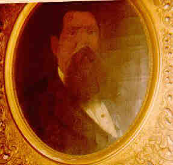

Irish Roots
My Irish roots begin in County Mayo where my Great Grandfather, Nicholas Hoey, was born in 1846, most likely in Kilicumnin Point Parish. He emigrated around 1873 with his older brother, John; an older half sister, Anne, had emigrated years earlier. Nicholas settled in Pittsburgh, PA where he worked in the steel mills. Rose Quinn, my Great Grandmother, was born in 1849 in Crosscavanagh, County Tyrone, Ireland. She came to Pittsburgh around 1874 and married Nicholas Hoey in St. Thomas Church in Braddock on 29 Feb 1876.
Michael Donahue (my other Irish great grandfather) was born in Galway, Ireland in 1857. He emigrated in 1875 with his step sister Bridget Dean and her husband and they all settled in Pittsburgh. Michael's wife (my great grandmother), Mary Agnes Donohoe, was born in Cong, County Mayo in 1865. Mary came to the US by herself around 1883. She and Michael were married in Allegheny county on 30 Aug 1888.
- Nicholas Hoey and Rose Quinn
- Michael Donahue and Mary Agnes Donohoe
- John Watson and Jennet Creighton
- Michael Walsh

Nicholas Hoey